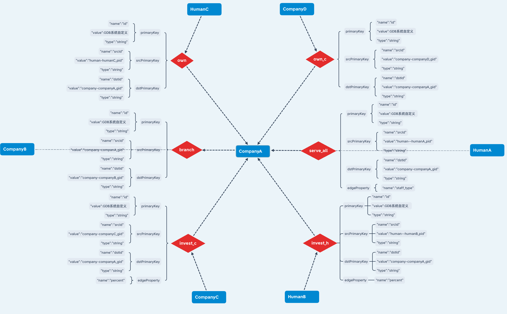
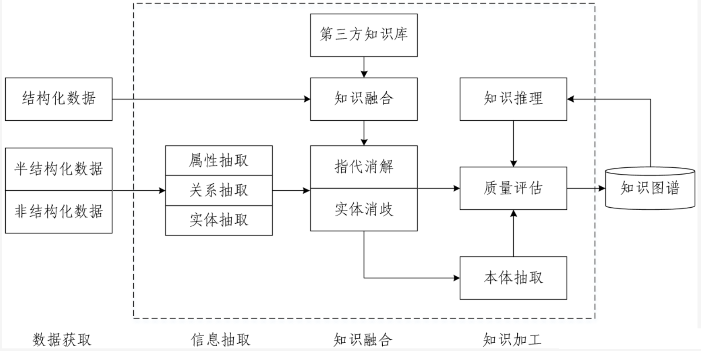

知识图谱概述¶
学习目标¶
- 掌握知识图谱的基本概念.
- 了解知识图谱的技术架构.
- 了解知识图谱的应用场景

1 基本概念¶
- 知识图谱本质上是一种语义网络，用图的形式描述客观事物，这里的图指的是数据结构中的图，也就是由节点和边组成的，这也是知识图谱（Knowledge Graph）的真实含义。
- 知识图谱中的节点表示概念和实体，概念是抽象出来的事物，实体是具体的事物；边表示事物的关系和属性，事物的内部特征用属性来表示，外部联系用关系来表示。很多时候，人们简化了对知识图谱的描述，将实体和概念统称为实体，将关系和属性统称为关系，这样就可以说知识图谱就是描述实体以及实体之间的关系。实体可以是人，地方，组织机构，概念等等，关系的种类更多，可以是人与人之间的关系，人与组织之间的关系，概念与某个物体之间的关系等等。
- 例如下图: 实体（点）可以是哺乳动物, 熊, 脊椎, 鱼, 水等; 关系（线）可以表明是, 有, 住在等关系.

2 分层架构¶
- 知识图谱由数据层（data layer）和模式层（schema layer）构成。
-
模式层是知识图谱的概念模型和逻辑基础，对数据层进行规范约束. 多采用本体作为知识图谱的模式层，借助本体定义的规则和公理约束知识图谱的数据层。也可将知识图谱视为实例化了的本体，知识图谱的数据层是本体的实例。如果不需支持推理, 则知识图谱(大多是自底向上构建的) 可以只有数据层而没有模式层。在知识图谱的模式层，节点表示本体概念，边表示概念间的关系。
- schema 图示例：

- 在数据层, 事实以“实体-关系-实体”或“实体-属性-属性值”的三元组存储，形成一个图状知识库. 其中，实体是知识图谱的基本元素，指具体的人名、组织机构名、地名、日期、时间等。关系是两个实体之间的语义关系，是模式层所定义关系的实例。属性是对实体的说明，是实体与属性值之间的映射关系。属性可视为实体与属性值之间的 hasValue 关系，从而也转化为以“实体-关系-实体”的三元组存储。在知识图谱的数据层，节点表示实体，边表示实体间关系或实体的属性。
3 技术架构¶
- 知识图谱技术架构图如下所示：

3.1 数据获取¶
- 目前，知识图谱数据源按来源渠道的不同可分为两种：
- 一种是业务本身的数据，这部分数据通常包含在行业内部数据库表并以结构化的方式存储，是一种非公开或半公开的数据；
- 另一种是网络上公开、抓取的数据，这些数据通常是以网页的形式存在，是非结构化的数据。
- 按数据结构的不同，可分为三种：结构化数据、半结构化数据和非结构化数据，根据不同的数据类型，我们采用不同的方法进行处理。
3.2 信息抽取（Information Extraction）【核心】¶
- 信息抽取的关键问题是如何从异构数据源中自动抽取信息得到候选知识单元。如前文所说，知识获取有两种渠道，前者只需要简单预处理即可以作为后续AI系统的输入，但后者一般需要借助于自然语言处理等技术来提取出结构化信息，这正是信息抽取的难点问题，涉及的关键技术包括实体抽取、关系抽取和属性抽取。
- 实体抽取（Entity Extraction）
- 定义：实体抽取是从文本中识别和提取具有特定意义的命名实体的任务。这些实体可以是人物、地点、组织、日期、货币等。
- 方法： 使用自然语言处理（NLP）技术，如命名实体识别（NER），采用规则、统计模型或深度学习模型，以识别并标注文本中的实体。
- 关系抽取（Relation Extraction）
- 定义： 关系抽取是从文本中识别和提取不同实体之间的关系的任务。这些关系可以是作者关系、工作关系、亲属关系等。
- 方法： 利用监督学习，使用有标签的数据进行训练，采用统计方法或深度学习模型，以识别文本中的关系。
-
属性抽取（Attribute Extraction）
- 定义：属性抽取是从文本中识别和提取与实体相关的特定属性或特征的任务。这些属性可以是实体的属性，如人物的职业、地点的经纬度等。
- 方法：采用规则匹配、基于统计的方法，或者深度学习模型，以从文本中提取出与实体相关的属性信息。
注意：属性主要是针对实体而言的，对当前实体的完整描述。由于可以把实体的属性看作实体与属性值之间的一种名词性关系，因此属性抽取任务就可以转化为关系抽取任务。
3.3 知识融合（Knowledge Fusion）¶
- 知识融合，简单理解是将来自不同来源、格式、结构的异构数据统一整合到一个一致的知识图谱中，在这个过程中，这一过程中，主要解决以下问题：
- 消除冗余：多个来源可能描述相同的实体或关系，知识融合要消除重复项，并确保图谱的精简性。
- 统一表达：不同来源中的实体可能使用不同的名称、格式或结构表示相同的概念或关系，融合需要将它们统一为一致的表示方式。
- 解决冲突：不同数据源对同一个实体或关系的描述可能存在冲突，知识融合需要在这些冲突中找到一致性，或通过可信度评估决定保留哪个版本。
- 知识扩展：融合过程可以从多个来源中挖掘新知识，丰富知识图谱的内容，提升知识的全面性和完整性。
- 知识融合中关键的技术：指代消解、实体消歧（实体链接）、实体统一（实体对齐）、关系对齐等（后续章节我们会详细分析）。
3.4 知识加工（Knowledge Processing）¶
- 海量数据在经信息抽取、知识融合之后得到一系列基本的事实表达，但这并不等同于知识，要想获得结构化，网络化的知识体系，还需要经过质量评估之后（部分需要人工参与甄别），才能将合格的部分纳入知识体系中以确保知识库的质量，这就是知识加工的过程。
4 应用场景¶
- 知识图谱的应用领域非常广泛，包括但不限于以下方面：
- 搜索引擎：知识图谱可以提供更加智能的搜索结果，通过语义理解和实体关联，帮助用户更准确地找到所需的信息。
- 智能助手和虚拟助手：知识图谱能够提供更智能的语音交互和问答系统，通过自然语言处理和语义理解，实现更加智能的语音交互。
- 金融领域：知识图谱可以用于风险评估、信用评级、欺诈检测等方面，通过分析金融数据和实体关系，提高金融行业的智能化水平。
- 医疗领域：知识图谱可以用于医学知识库的构建、疾病诊断、药物研发等方面，通过医学知识的语义关联和整合，提高医疗服务的智能化水平。
- 教育领域：知识图谱可以用于教育资源的整合、个性化学习等方面，通过知识关联和学习分析，提高教育教学的智能化水平。
- 电商领域：知识图谱可以用于商品推荐、用户画像分析等方面，通过用户行为和兴趣的分析，提高电商平台的个性化推荐能力。
- 社交网络：知识图谱可以用于社交网络的语义理解和关系挖掘，通过用户行为的监测和分析，提高社交网络的服务质量和用户体验。
- 物联网领域：知识图谱可以用于智能家居、智能交通等方面，通过数据融合和智能化处理，提高物联网应用的智能化水平。
- 综上所述，知识图谱的应用领域非常广泛，几乎涵盖了现代社会的各个领域，为各行各业提供了更加智能化、高效化的解决方案。
小节总结¶
- 本小节我们学习了知识图谱中的基本概念, 重点讲解了知识图谱的技术架构, 后续我们会对技术架构中的：实体识别、关系抽取、实体消岐等知识模块重点讲解，其他技术点了解即可。